Explore Gijón
A Brief History
Gijón developed from the Roman settlement of Gigia on the Bay of Biscay and later served Asturias as a port for coal, steel, and fishing fleets. The Cimadevilla headland preserves fishermen's lanes beside eighteenth-century palaces such as Revillagigedo, while the mid-twentieth-century Laboral complex and Atlantic Botanical Garden reflect state patronage and modern civic planning. Roman baths at Campa de Torres, cider culture, and the San Lorenzo seafront record how the city became Asturias' largest coastal centre.
Attractions Map
Top Sights & Activities
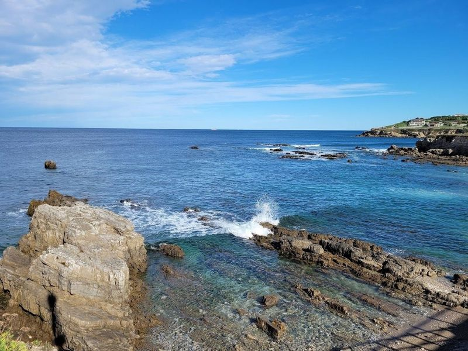
Monumento a la Madre del Emigrante
Sculpted by Emilio Mariño and installed in 1960 on the Cerro de Santa Catalina headland, this bronze group shows a mother waving farewell toward the Atlantic. It commemorates Asturian families who sent sons and daughters to emigrate to the Americas after the Spanish Civil War and during the 1950s and 1960s economic crisis. The statue faces the harbour and is a frequent stop on walks through Cimadevilla above San Lorenzo beach.
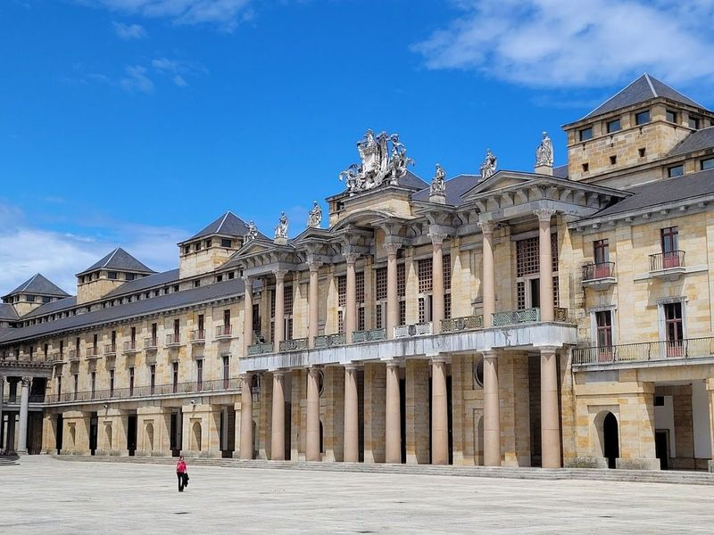
Universidad Laboral
Francisco de Ubeda and Luis Moya designed this monumental complex in the 1940s and 1950s as a vocational school for the Instituto Nacional de la Segunda Enseñanza. Its elliptical church dome and 117-metre stone tower dominate the Cabueñes plain southeast of the centre. Now managed as Laboral Ciudad de la Cultura, the campus houses a theatre, cinemateca, and guided tours across cloisters and the tower mirador.
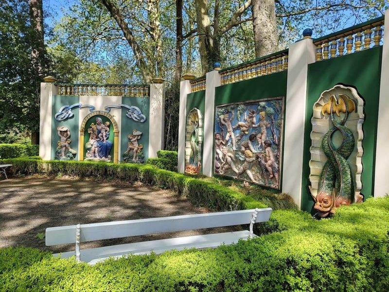
Jardín Botánico Atlántico
Opened in 2003 on twenty-five hectares facing Laboral Ciudad de la Cultura, this Atlantic botanical garden groups native Asturian plants with collections from humid temperate zones of Europe and the Americas. Greenhouses and outdoor beds illustrate Cantabrian laurel forest, meadow species, and crop plants of the northern coast. The municipal garden runs scheduled guided walks included with admission.
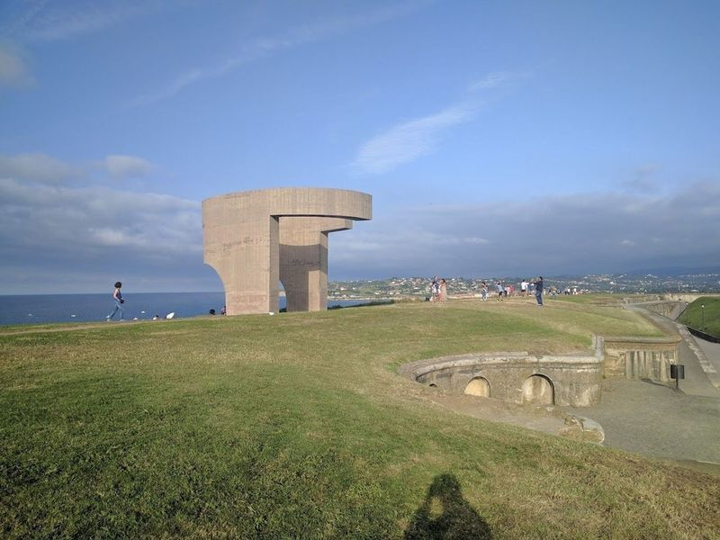
Elogio del horizonte
Eduardo Chillida cast this corten-steel sculpture in 1990 on the Santa Catalina headland above Gijón harbour. Its curved upper chamber frames the Cantabrian horizon and funnels sea sound into an enclosed viewing space. Installed for the city's five-hundredth-anniversary commemorations, the piece is commonly nicknamed by locals for its box-like silhouette. It stands beside Roman remains at Campa de Torres and walks along the clifftop esplanade.
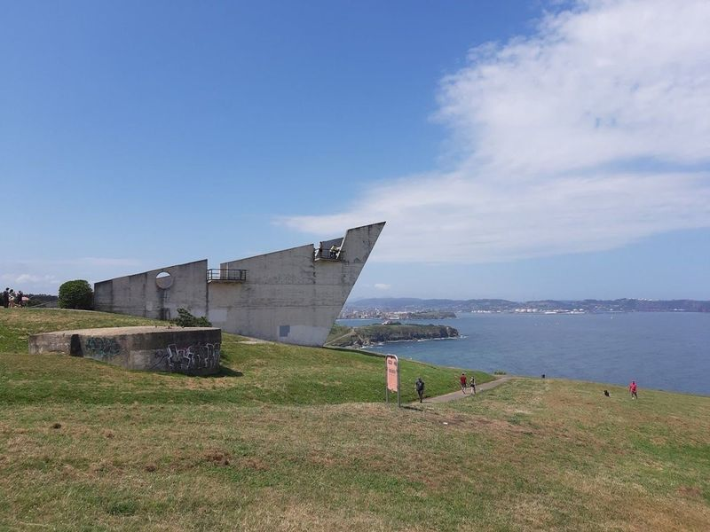
Mirador de La Providencia
This viewpoint sits on the clifftop path between San Lorenzo and La Ñora beaches east of the city centre. From the terrace travellers look along the crescent of Playa de San Lorenzo, the port, and the headland of Cimadevilla. The mirador forms part of the senda natural litoral maintained by Asturias coastal trail networks, linking urban promenades with stretches above Cantabrian breakers.
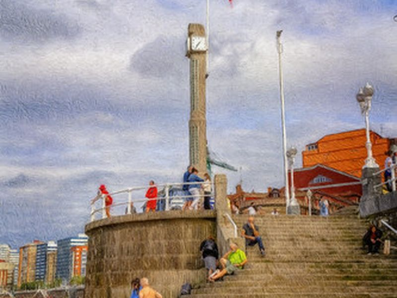
La Escalerona
La Escalerona is a monumental seaside staircase on the Muro de San Lorenzo linking the upper promenade to the sands of Playa de San Lorenzo. Built in a markedly vertical style, the steps give pedestrians direct access between the beach and the clifftop walk near the Piles river mouth. The structure is a familiar reference point on city maps at the eastern end of the main bay.
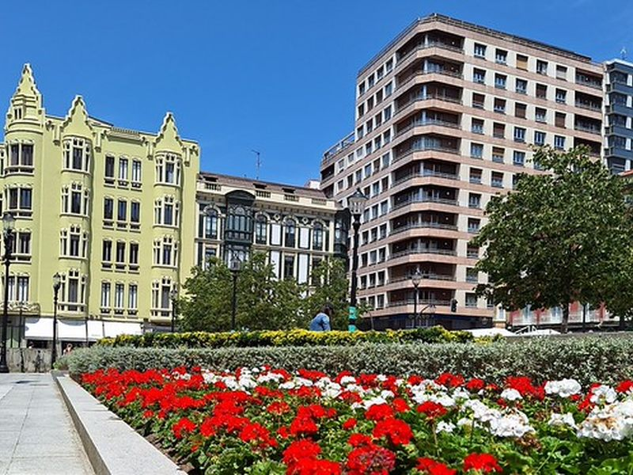
Plaza del Parchís
Named for the parcheesi board painted on its paving, this small square sits in the lower centre beside the Basilica of the Sacred Heart and streets leading into Cimadevilla. Cafés and shops surround the plaza, which functions as a neighbourhood meeting place away from the bayfront crowds. Its coloured pavement design has made it a recognizable local landmark in post-war urban redevelopment around the harbour.
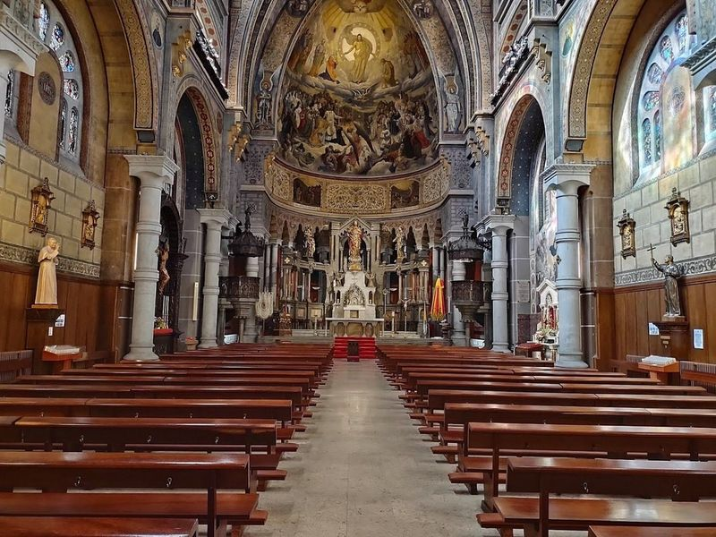
Basilica of the Sacred Heart of Jesus
Built between 1894 and 1918 in neo-Gothic style for the Jesuit college of San Luis Gonzaga, this basilica stands on Plaza del Parchís below Cimadevilla. A Carrara-marble Sacred Heart statue above the altar rises nearly eight metres. Stained-glass windows, rib vaults, and side chapels reflect the congregation's late nineteenth-century expansion in the port district.
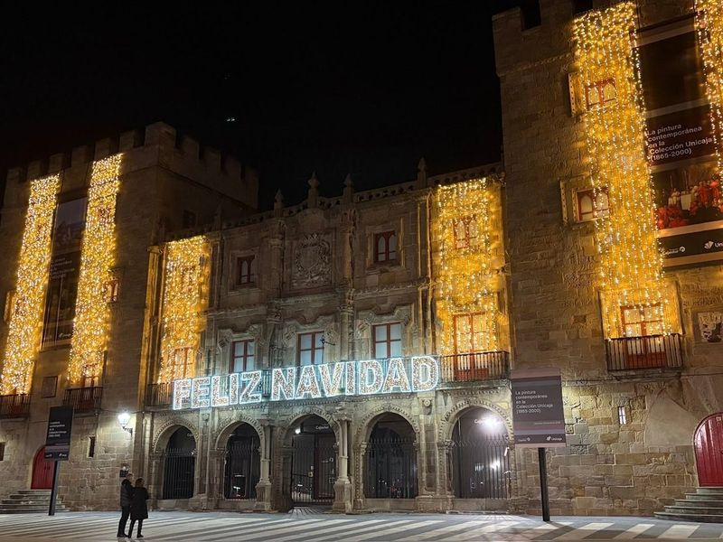
Palacio de Revillagigedo
The Marquis of San Esteban de Natahoyo commissioned this baroque palace in 1705 from architect Francisco Menéndez Camina on Plaza del Marqués beside the marina. Flanking towers incorporate a fifteenth-century keep, and the adjoining Colegiata de San Juan Bautista served the family chapel. Restored as the Centro Internacional de Arte Palacio de Revillagigedo, it hosts free temporary exhibitions in ground-floor salons.
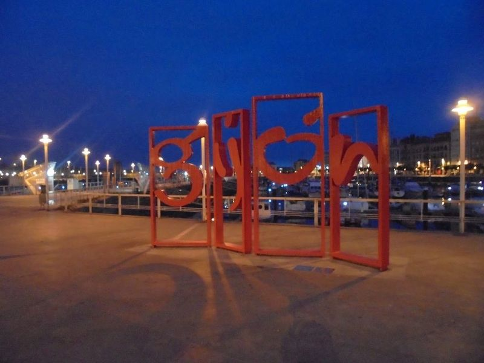
Las Letronas
Installed near the marina as municipal signage art, Las Letronas spells GIJÓN in large red letters along the waterfront promenade between the port and Poniente beach. The sculpture provides orientation for pedestrians arriving from the harbour walks and is often photographed against moored yachts and the Cimadevilla hillside. It marks the transition from the commercial port zone into the open bayfront.
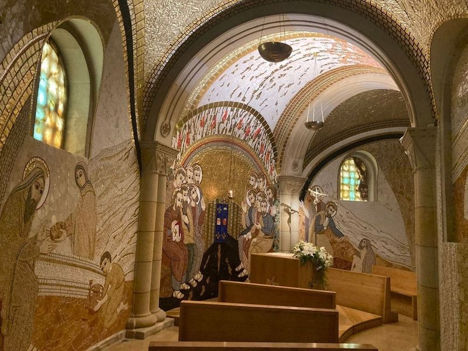
Parroquia San Pedro
This parish church in Cimadevilla dates to the fifteenth century, with later reforms to its stone nave and bell tower above the fishermen's quarter. It overlooks the small harbour and breakwaters where Cantabrian swells meet the pier at high tide. Interior mosaics and maritime ex-votos reflect the district's long dependence on coastal trade and inshore fishing fleets.
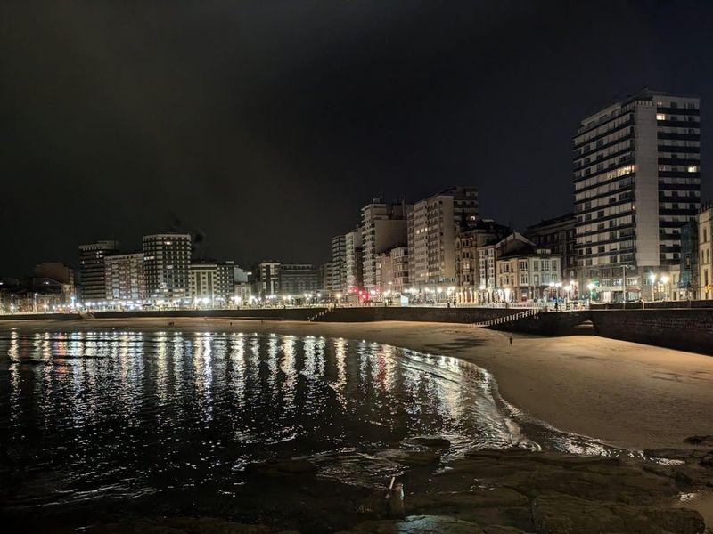
Playa de San Lorenzo
Gijón's principal urban beach curves for roughly fifteen hundred metres along the bay west of Cimadevilla. Golden sand, a seafront wall, and a paved paseo link the Piles estuary to the eastern cliffs. Municipal services include summer lifeguards, showers, and surf schools; the breakers of the Cantabrian Sea make the beach popular with board-riders as well as walkers.
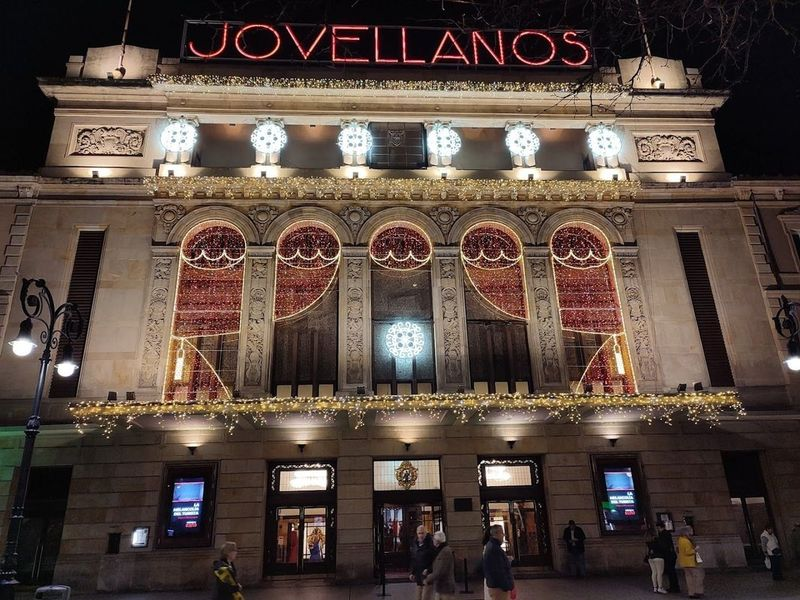
Teatro Jovellanos
The city opened this municipal theatre in 1848 on Paseo de Begoña, named for the Asturian enlightenment figure Gaspar Melchor de Jovellanos. Renovated in the late twentieth century, it stages theatre, dance, classical concerts, and family programs managed by Divertia for the Ayuntamiento de Gijón. The horseshoe auditorium seats about nine hundred beneath a renovated ceiling and modern technical installations.
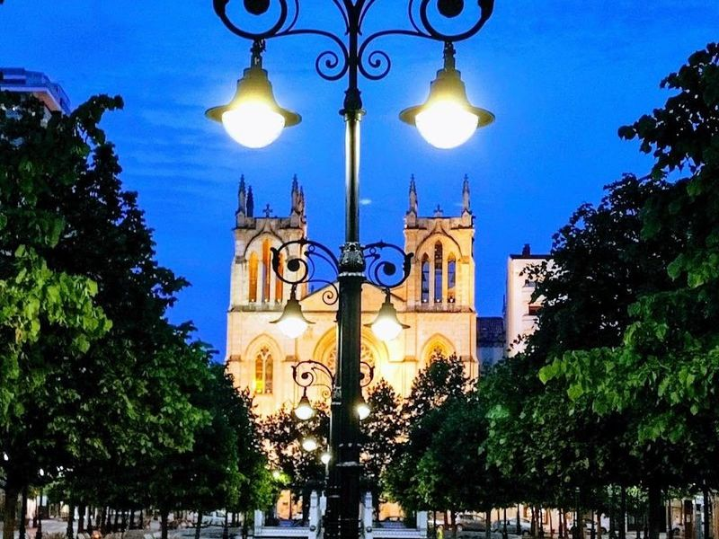
Parque de Begoña
Laid out around the Teatro Jovellanos, this tree-lined paseo connects the lower commercial streets with the basilica quarter south of the marina. Benches, play areas, and seasonal kiosks occupy a pedestrian axis that carries foot traffic between cultural venues and neighbourhood shops. The park shares its name with the adjacent theatre and forms part of the centre's nineteenth-century expansion inland from the bay.